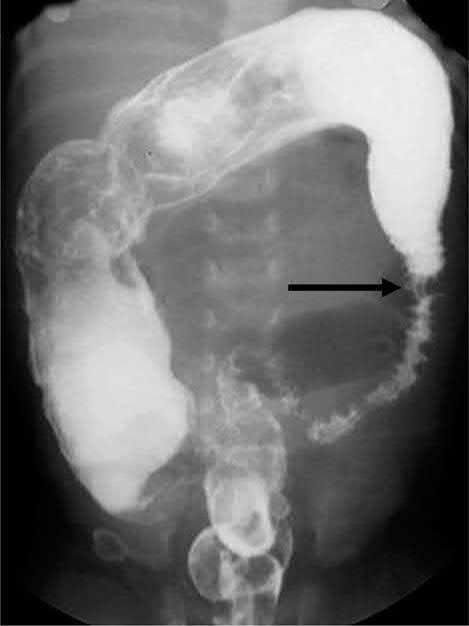
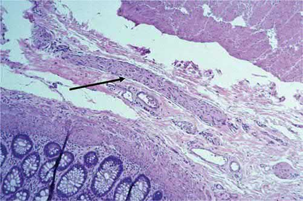
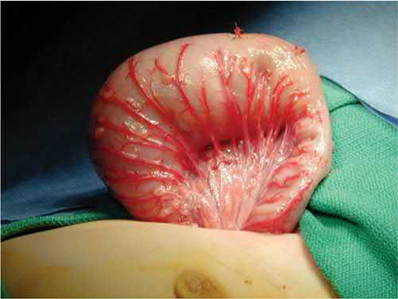

Hirschsprung's Disease
Summary
- Hirschsprung's disease (HD) is congenital aganglionosis of the distal intestine, resulting from failure of neural crest-derived ganglion cells to migrate caudally, producing a functionally obstructed, non-relaxing distal segment and a dilated proximal (ganglionic) bowel [1][2].
- It occurs in about 1 in 5000 live births and is the leading cause of colonic/neonatal colonic obstruction, classically presenting with delayed passage of meconium [1][3].
- Diagnosis is confirmed by rectal biopsy showing absent ganglion cells, and treatment is surgical resection of the aganglionic segment with a pull-through procedure (Swenson, Duhamel, or Soave) [4][5].
Definition
Hirschsprung disease refers to congenital aganglionosis of the intestine, characterized by an absence of ganglion cells in the myenteric (Auerbach) and submucosal (Meissner) plexuses of the distal colon/rectum [1][2].
Pathophysiology
- Genetic defects (e.g., RET, EDNRB, EDN3) can affect the migration of neural crest-derived intestinal neurones (a "neurocristopathy"), leading to aganglionosis and thickened nerve trunks in the distal bowel [5].
- Neuroblasts derived from neural crest precursors normally migrate within the submucosal and intermuscular planes of the gut to the rectum by the 12th week of gestation.
- Arrest of this caudal migration results in ineffective peristalsis and increased tone in the distal segment of bowel [2].
- Aganglionic bowel fails to relax, causing a functional obstruction [5].
- This neurogenic, parasympathetic abnormality causes failure of propagation of peristaltic waves with absent muscular relaxation of the distal colon and internal anal sphincter.
- The abnormal bowel is the externally normal-caliber distal segment, while the dilated proximal bowel is actually the normal (ganglionic) segment [1].
- Aganglionosis begins at the anorectal line.
- Reported extents vary by source: aganglionosis extends from the anus to the sigmoid colon in 75% of cases, the proximal colon in 15%, and the terminal ileum in 10% [5]; transition to normal colon occurs in the rectosigmoid in approximately 80%, splenic/transverse colon in 17%, and small intestine (total colonic disease) in 8% [1]; and 77% of cases are "short segment" in the rectosigmoid region, with approximately 10% involving the entire colon and rare extensive small bowel aganglionosis [2].
- A transition zone lies between the dilated, proximal, normal (ganglionic) bowel and the narrow, distal aganglionic bowel.
- Within it ganglion cells begin to appear, but in reduced numbers [1][5].
Clinical features
- Neonatal Hirschsprung's disease presents with delayed passage of meconium, abdominal distension, and bilious vomiting requiring resuscitation [5].
- Most infants (>90%) present with abdominal distention and bilious emesis with failure to pass meconium within the first 24 hours of life [1].
- The most common presenting sign is failure to pass meconium in the first 24 hours of life.
- The disease can also present in older children (age 2–3) as chronic constipation [3].
- Approximately 50% of patients with HD are diagnosed in the newborn period, presenting with abdominal distention, bilious vomiting, and constipation with delayed passage of meconium beyond 48 hours of life [2].
- Explosive release of watery/foul-smelling stool may occur on anorectal examination [3].
- Those with missed diagnoses may present later in life with a chronic history of abdominal distention and constipation [1].
- Hirschsprung's-associated enterocolitis, occurring in approximately 40% of patients, presents with alternating diarrhea and obstipation, abdominal distention, fever, hematochezia, foul-smelling explosive loose stools, and can progress to peritonitis, shock, and death; it is the leading cause of death in patients with uncorrected disease [1][2].
Etiology
- HD occurs in about 1 in 5000 live births, with male infants affected four times more frequently than females [1].
- Maingot's cites 80% of affected patients as male [2].
- Of these patients, 3–5% have Down syndrome, and risk is greater with a family history [1].
- An abnormal locus on chromosome 10 has been identified in some families, associated with the RET oncogene [1].
- Genetic defects including RET, EDNRB, and EDN3 are implicated, and there may be a family history [5].
- Hirschsprung disease is also associated with multiple endocrine neoplasia type 2A (MEN2A), where nearly 20% of RET-mutation kindreds with codon 609, 618, or 620 mutations have Hirschsprung disease [6].
- Incidence among preterm newborns is rare [2].
Diagnosis
- Rectal biopsy is the gold standard/definitive diagnostic test, showing absence of ganglion cells [1][3][4].
- Samples of mucosa and submucosa are obtained via suction rectal biopsy in the newborn period (performed at bedside without anesthesia, since this bowel lacks somatic innervation and biopsy is painless), typically at least 5 mm to 1.5 cm above the dentate line to avoid sampling anoderm, with two or more specimens 1 cm apart recommended; in older children, IV sedation and a full-thickness trans-anal incisional biopsy may be needed as thicker rectal mucosa is not amenable to suction biopsy [1][2][4].
- Histopathologic criteria are absent ganglia, hypertrophied nerve trunks, and increased/robust acetylcholinesterase staining.
- Calretinin immunostaining (decreased in HD) has become a standard adjunct [1][2][4].
- A contrast/barium enema is the diagnostic imaging study of choice in a newborn, showing a narrow-caliber aganglionic segment, a transition zone, and dilated proximal bowel.
- Failure to evacuate contrast after 24 hours strongly indicates Hirschsprung's, and the enema is useful for excluding other causes of constipation such as meconium plug, small left colon syndrome, and intestinal atresia, though it can only suggest, not reliably establish, the diagnosis [1][4][5].
- An obvious transition zone requires time to develop and may not be present in the neonate [2].
- Rectal manometry in toddlers/older children can show failure of the internal sphincter to relax (internal sphincter contraction rather than relaxation) upon rectal balloon distention [1][2].
- Plain abdominal radiograph may show a dilated distal/proximal colon and stool accumulation [2][3].


The length of aganglionic bowel divides the disease into three, and the proportions are worth carrying. Incidence is 1 in 5000 live births, commoner in boys, and results from incomplete migration of neural crest cells into the hindgut, giving distal aganglionosis with failure of coordinated peristaltic waves, abnormal anorectal relaxation, and loss of the recto-anal inhibitory reflex [7]:
| Extent | Proportion | Note |
|---|---|---|
| Rectum and rectosigmoid ("standard segment") | 75 to 80% | Usually presents in infancy or early childhood |
| Extensive colonic involvement ("long segment") | 15 to 20% | |
| Total colonic aganglionosis | 5 to 10% | Variable length of small bowel involved |
Table reformats the distribution of aganglionic segment length [7]. The aganglionic segment fails to relax and causes distal bowel obstruction with proximal distension [7].
Presentation is classically neonatal but a late presentation is well described. Failure to pass meconium within 24 to 48 hours, abdominal distension and bile vomiting is the neonatal picture, with a recognised association with Down's syndrome. Late presentation is with poor weight gain, offensive diarrhoea, or enterocolitis [7].
- One caution about the contrast enema is easy to miss.
- The abdominal radiograph shows multiple distended loops consistent with distal obstruction; rectal examination may produce an explosive release of stool; and the contrast enema shows a transition from collapsed distal to dilated proximal bowel, but the level of suspected transition is not reliable [7]. Suction rectal biopsy confirms the diagnosis, showing aganglionosis and thickened nerve fibres with characteristic acetylcholine and calretinin stains, and anorectal manometry in older children may show loss of the recto-anal inhibitory reflex [7].
- Warm saline rectal washouts serve two purposes, decompressing the abdomen and protecting against enterocolitis [7].
- Initial management is medical and the operation is defined by what it achieves rather than by which eponym is used.
- Fluid resuscitation, broad-spectrum antibiotics and analgesia, then decompression of the colon with regular saline rectal washouts; if decompression is not successful, a defunctioning stoma is necessary [7].
- Definitive surgery removes the aganglionic bowel and brings normally innervated bowel to the anus, by a pull-through of Soave, Swenson or Duhamel type, performed as a single stage or with a covering stoma, transanally or abdominally, with laparoscopy sometimes used for the abdominal component [7].
The complication figures are sobering and are the answer to "how does this child do". One-third of infants require further surgery within 30 days, for obstruction, a twisted pull-through, or anastomotic leak or stenosis [7]. Long-term bowel function management is needed, with constipation and incontinence the recurring issues, and enterocolitis, though less common after pull-through, affects 20 to 50% of children before and after operation, becoming uncommon over 5 years of age unless an obstructive component exists [7].
Treatment and Management
- Once diagnosis is confirmed, disease can initially be managed with daily rectal irrigations/washouts using a soft catheter and warm saline, which may allow a period of growth at home before surgery [1][5].
- Neonatal presentation requires resuscitation, gastric decompression, antibiotics, and a bowel washout [5].
- Irrigations may be ineffective or impossible with comorbidities, difficult family circumstances, or long-segment disease; in these cases a leveling colostomy with intraoperative biopsies to identify the site of normal ganglionated intestine may be necessary [1].
- If decompression fails, a stoma is fashioned using frozen section histopathology to identify ganglionic bowel [5].
- A loop colostomy ("leveling colostomy") in the most proximal region of normally innervated bowel allows decompression and normalization of intestinal caliber over 6 to 8 weeks [2].
- Medical treatment of HD alone is ineffectual and may be dangerous if enterocolitis intervenes [2].
- Hirschsprung's colitis may be rapidly progressive, manifesting with abdominal distention and foul-smelling diarrhea and possible sepsis.
- Treatment is rectal irrigation to try to empty the colon, and emergency colectomy may be needed [3].
- One-stage pull-through with rectal irrigations has become the standard approach for most patients, although two- or three-stage operations (initial leveling colostomy followed by definitive pull-through) may be necessary in certain cases [1].
There is no NICE guideline on Hirschsprung's disease, and the UK pathway reaches it from the other direction: CG99 exists to stop a child with Hirschsprung's being treated as idiopathic constipation. The guideline's whole diagnostic apparatus is a set of red flags, and the instruction attached to them is absolute: if a child or young person has any 'red flag' symptoms, do not treat them for constipation. Instead refer them urgently to a healthcare professional with experience in the specific aspect of child health that is causing concern [8].
The red flags divide into history and examination, and several point directly at aganglionosis [8]:
| Component | Idiopathic constipation | Red flag: not idiopathic |
|---|---|---|
| Timing of onset | Starts after a few weeks of life, with an obvious precipitant such as fissure, change of diet or infection | Reported from birth or the first few weeks of life |
| Passage of meconium | Normal, within 48 hours after birth in a term baby | Failure to pass meconium, or delay beyond 48 hours after birth in a term baby |
| Stool pattern | — | 'Ribbon stools', more likely in a child younger than 1 year |
| Growth | Generally well, weight and height within normal limits | Faltering growth is an amber flag, not red |
| Abdomen | Soft; flat, or distension explicable by age or excess weight | Gross abdominal distension; abdominal distension with vomiting |
| Perianal area | Normal appearance of anus and surrounding area | Abnormal appearance, position or patency: fistulae, bruising, multiple fissures, tight or patulous anus, anteriorly placed anus, absent anal wink |
| Legs and spine | Normal locomotor development, gait, tone and strength | Previously unknown leg weakness or locomotor delay; asymmetry or flattening of the gluteal muscles, sacral agenesis, discoloured skin, naevi or sinus, hairy patch, lipoma, a central pit you cannot see the bottom of, scoliosis |
Table reformats the CG99 red flags [8]. Note that faltering growth is handled separately and is not itself a red flag: treat for constipation and test for coeliac disease and hypothyroidism [8].
- Digital rectal examination is restricted in a way that is specific to this disease, and the wording names Hirschsprung's three times.
- It should be undertaken only by healthcare professionals competent to interpret features of anatomical abnormalities or Hirschsprung's disease [8].
- If a child younger than 1 year has idiopathic constipation that does not respond to optimum treatment within 4 weeks, refer them urgently to such a professional [8].
- And in a child older than 1 year with any red flag, do not perform a digital rectal examination at all
- Refer urgently instead [8].
- Where it is performed, ensure privacy, documented informed consent, a chaperone, and attention to the child's preferences about body exposure and the examiner's gender [8].
- The postnatal guideline supplies the earliest trigger of all. If the baby has not passed meconium within 24 hours of birth, this may indicate a serious disorder and requires medical advice [9].
- CG99's threshold for a red flag is 48 hours in a term baby.
- NG194 asks for medical advice at 24 hours, so the two documents bracket the window in which delayed meconium moves from a question to a referral [8][9].
Surgeries
- Definitive surgery removes the aganglionic segment and brings ganglionic bowel down to the anus.
- Swenson, Duhamel, Soave (also credited to Yancey), and transanal "pull-through" procedures are options, with similar functional results when performed in skilled hands [1][2][5].
- The Swenson procedure, originally described in 1949, involves full-thickness dissection of the rectum, freeing it from the surrounding sphincter mechanism, with resection of the aganglionic distal segment (margin usually 1–2 cm above the dentate line) followed by end-to-end coloanal anastomosis of the proximal ganglionated bowel to the distal anal cuff [1][2].
- The Duhamel procedure removes the aganglionated portion of colon and performs an end-to-side anastomosis: an incision is made in the rectum about 1 cm proximal to the dentate line, the ganglionated bowel is passed through the presacral space posterior to the rectum, and a stapled end-to-side anastomosis (often using a stapling device to enlarge the anastomosis) creates a "neo-rectum" formed anteriorly by aganglionic rectum and posteriorly by normal bowel [1][2].
- The Soave procedure (the most commonly used, typically laparoscopic-assisted transanal approach) involves endorectal mucosal dissection within the aganglionic rectum starting about 5 mm proximal to the dentate line, conversion to full-thickness dissection at the intra-abdominal rectum, posterior myotomy of the remnant muscular cuff, pull-through of ganglionated colon, and coloanal anastomosis approximately 1–2 cm above the dentate line; it removes the mucosa of the rectum while leaving external layers intact, mitigating the pelvic-dissection injury risk of the Swenson approach, and can be performed entirely transanally [1][2].
- Confidence in frozen-section identification of normal ganglionated bowel is necessary before a primary endorectal pull-through is performed [2].

Complications
- Postoperative complications, including anastomotic leaks, strictures, intestinal obstruction, and pelvic abscesses, occur in approximately 5% of patients [2].
- Postoperative enterocolitis occurs in approximately 40% of patients regardless of the corrective procedure used, with the incidence appearing to decrease with age [2].
- Stool dysfunction can persist postoperatively and can be difficult to manage, sometimes requiring intermittent rectal decompression.
- Constipation is a common postoperative problem along with frequent soiling, incontinence, and postoperative enterocolitis, requiring close follow-up and aggressive management with stool softeners and laxatives [1].
- Unrecognized HD in infancy has been associated with 25–30% mortality [2].
- Enterocolitis is the leading cause of death in patients with uncorrected Hirschsprung disease [1].
Prognosis
Most children achieve reasonable bowel control after pull-through surgery, but some have residual constipation, incontinence, or episodes of enterocolitis [5]. Mortality is rare except in the setting of enterocolitis [2]. Overall, approximately 80–90% of patients followed beyond 5 years of age have normal evacuation and continence [2].
References
- Sabiston Textbook of Surgery, 22nd ed., Ch. 117 Pediatric Surgery
- Maingot's Abdominal Operations, 13th ed., Ch. 9 Pediatric GI Surgery
- The ABSITE Review, 2022, Ch. 43 Pediatric Surgery
- Schwartz's Principles of Surgery: ABSITE and Board Review, Ch. 39 Pediatric Surgery
- Bailey & Love's Short Practice of Surgery, 28th ed., Ch. 18 Neonatal surgery
- Sabiston Textbook of Surgery, 22nd ed., Ch. 78 The Multiple Endocrine Neoplasia Syndromes
- Oxford Handbook of Clinical Surgery, 5th ed., Ch. 13 Paediatric surgery
- NICE Clinical Guideline CG99: Constipation in children and young people: diagnosis and management. National Institute for Health and Care Excellence, London, UK, 2010, updated 2017., 1.1.2; 1.1.2, Table 2; 1.1.3; 1.1.3, Table 3; 1.1.4; 1.2.1; 1.2.2; 1.2.3; 1.2.4 www.nice.org.uk
- NICE Guideline NG194: Postnatal care. National Institute for Health and Care Excellence, London, UK, 2021., 1.3.2 www.nice.org.uk